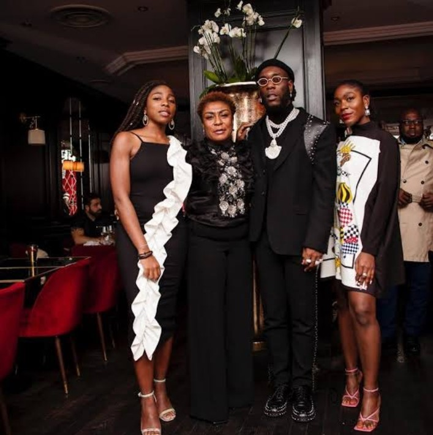

Burna boy
Damini Ebunoluwa Ogulu born on the 2nd of July 1991 in Ahoada, Rivers State, South-Southern Nigeria. He grew up with his parents, Mr Samuel Ogulu and Mrs Bose Ogulu and spent most of his childhood in Rivers before his family relocated to Lagos.
According to records,Burna boy attended Montessori International School,from where he moved to Corona, Agbara, Lagos, for his secondary school education. He also had stints at the University of Sussex and Oxford Brookes University, where he studied media communications and culture. Growing up in an averagely rich family,Burna boy had an exciting childhood surrounded by members of his extended family.
His father was popular for managing a welding company,and his mother worked as a translator for the Federation of West African Chambers of Commerce.
His maternal grandfather Benson Idonije once managed the afrobeat legend,Fela Anikulapo Kuti.
Even as a child he was already exposed to music styles that somehow influenced his music style and genre.
.
 Burna boy
Burna boy
Burna boy has two siblings both girls Ronami and Nissi Ogulu. Of the two, Nissi is more on the news. She studied at the Royal High School Bath and she also studied Mechanical engineering University of Warwick. Nissi is an engineer, music artist and philantrophist. After her education Nissi created an animation company that is concerned with the making of animations for sale.
Ronami is the first daughter of the Mr and Mrs Ogulu she was born on the 14th of March 1993. She is a fashion stylist, who styles her elder brother, Burna boy. She has been spotted on many occasions styling her brother, for his events including international ones. Ronami Ogulu is the creating/branding Executive at Spaceship collections, Burna boy's label.

Grammy award winner Ebunoluwa Damini Ogulu professionally known as Burna boy or African giant,as he proudly calls himself is a Nigerian singer, song writer and record producer.
He rose to stardom after releasing his lead single Like to partyfrom his debut studio album L.I.F.E(leaving an impact for eternity)
in (2013). In 2019, he won Best International Act at the 2019 BET Awards, and was announced as Music Up Next artist that year.His fourth studio album, titledAfrican giant,was released in July 2019. It won album
of the year at the 2019 All Africa Music Awards and was nominated for Best World Music album
at the 62nd Annual Grammy Awards. Burna boy released his fifth studio album, Twice as tall in August 2020. It won Best International Act at the 2021 BET Awards.
THE LISTS OF BURNA BOY'S ALBUMS FROM 2013 TILL DATE
- L.I.F.E - 2013
- On a Spaceship - 2015
- Outside - 2018
- African Giant - 2019
- Twice as Tall - 2020
- Love, Damini - 2022